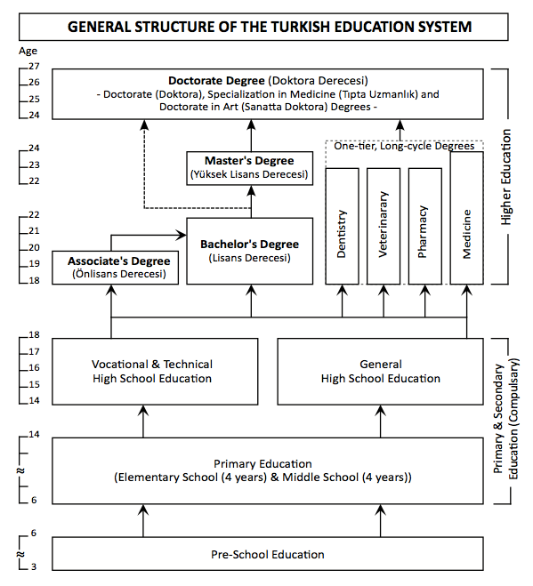

These notes are from the presentations given to the EDS200
Section 3 students. They have been changed and edited by İsmail Efe Top
and are free for all those who want to read them. Misinformation and
typos may be present.
Personal
Attributes for Effective Teaching - W7
They have motivating personalities, they seem to enjoy what they are
doing. They are supportive of students and they are believable and easy
to trust.
Enthusiasm
- Insterest and involvement with the subject matter
- Tips:
- Variety in speech, gestures & facial expressions
- Move around the room
- Use their bodies to emphasize their points
- Mantain eye contact with all students
- Encourage all students to participate
- Use input from all students
- Capture attention by adjusting the pace, tone, and pauses in their
speech to keep the audience engaged.
- Changes their facial expressions
They don't have to be constantly enthusiastic, levels of enthusiasm
are most effective when varied appropriately.
Warmth
- Positive, supportive and interpersonal relationships with
students
- Allow students to get a sense of your personality
- Demonstrate interest in your students as individuals
- Unfair treatment, inflexibility, being over judgmental reduce
warmth
Humor
- Make learning fun because it defuses tension, promotes trust, and
reduces discipline problems
- Don't be afraid to laugh when someting funny occurs
- Avoid sarcasm and cynicism
Credibility & Trust
- Credibility & trust must be earned, you are only credible only
when your students believe you are
- Students get more suspecting of their teacher's credibility as they
get older
- Your credentials, messages that you sent to students and your
behavior are the 3 most important elements for credibility
Orientation towards success
They are encouraging and supportive, they also have high expectations
for success
- Believe in their students’ abilities to learn and in their own
ability to help students be successful
- Teachers’ expectations should be continually modified to more
accurately reflect students’ ability
High Expectations:
- You should convey to your students that you expect them to be
successful and that you will help them be so.
- You should set realistic goals
- Less academically abled or less confident students need more
experience of success, which should be adjusted based on their level of
development.
- Task difficulty should be bases on students' ability.
What teachers should expect from themselves:
- Use class time efficiently
- Offer meaningful feedback to students
- Convey confidence and calm
- Dress, act and speak professionally
Encourage Students
Encouragement can motivate students to attempt tasks they may be
reluctant to start and to continue working when they are struggling or
become frustrating How to encourage students?
- A classroom environment that is supportive, safe & open
- Students must feel that the tasks you assign are realistic and
important and they can approach you for assistance if needed
Professional demeanor
Businesslike
- Goal-oriented
- Establish clear, realistic, and specific objectives
- Seek input from students about the reasonableness of the objective
& use this information to modify their instruction when
neccesary
- Serious
- Indicate the value of the tasks at hand, reasonable expectations,
guidance in task execution and efficiently use time
- Use appropriate vebal & non-verbal behaviors
- Deliberate
- Mantain a sense of purpose throughout each lesson
- Organize activities in a logical sequence including a clear
introduction, presentation and closure.
- Organized
- Arrange furniture, tools, and activities to avoid
interruptions.
- Get help from available people, like parent volunteers, to improve
learning, not just to make things easier.
- Set up classroom rules to reach our goals, even how we manage
behavior is about achieving what we want.
Being adaptable & flexible
"No matter what you plan for, something else will happen."
- While the nature of teaching is not that unpredictable, a teacher
surely must be adaptable enough to plan for unforseeable events.
- Consciously monitor the effectiveness of the activities you and your
students are engaged in.
- If not effective, you should be ready to adapt and change plans. You
can tell it's effectiveness from students verbal and nonverbal ques.
- To summerize; you should avoid a tendency to stick with your lesson
plan if it's not working.
- Tips:
- Consider students' characteristics, attributes, preferences, and
interests.
- Instructions should be interesting and directed toward the intended
learning outcomes.
Knowledgeable
Good teachers know their subjects well but it is not enough, the most
effective teachers combine content knowledge with knowledge of teaching
and with knowledge of their students.
Knowledge of pedoagogy and of learners allows the teacher to select
and implement instructional alternatives that can best address
students's misconceptions. Thus effective teachers should have knowledge
of the subject, and how best to help the individual students in their
classes come to understand it appropriately.
Professional
skills and abilities of effective teachers. - W8
Effective teachers possess a repertoire of professional skills that
enable them to help students learn more
Focusing & Engaging
Students' attention
- Establishing set at the beginning of the lesson
- Provides the context for the lesson
- Should:
- Hook students' interest
- Establish a favorable / encouraging environment
- Make students aware of the topics, objectives and tasks for the
lesson
- Relate the previous lessons to the current lesson
- The beginning of a lesson is important because it establishes a tone
for the lesson
- Using Variety
Variety increases learning by helping students remain more interested & engaged
- Variety can be in,
- Instructional activities, approaches, materials
- Types of assessment
- Non-verbal behavior
- Interacting with students
Using Instructional Time
Effectively
- Optimizing time
- Time on task: The amount of time students actively
engaged in academic tasks
- The more time students spend actively engaged in academic tasks, the
more they learn
- Mandated Time: Formal time scheduled for school
(the length of the school year)
- Allocated Time: Amount of mandated time intended
solely for academic activities
- Academic Instruction Time: Amount of allocated time
during which the teacher is conducting instructional activities
- Academic Learning Time: Amount of time a given
student spends actively engaged in academic tasks.
- If the student does not pay attention or is inaccurately learning
the content: it is not academic learning time
- Effective teachers are the ones who decrease the difference between
the mandated time and academic learning time
- Tips:
- Begin and end on time
- Establish rules and routines
- Actively monitor students' engagement
- Create a highly interactive & varied enviroment that gets
students' attention and hold it throughout the lesson
Although the allotted time may appear sufficient, various tasks such
as attendance tracking, distributing papers, providing feedback, and
other administrative responsibilities consume a significant portion of
your time, resulting in reduced academic instruction time.
- Maintaining the momentum is important, it helps maximize academic
learning time by maintaining an instructional pace.
- Momentum must be adapted to students' needs
- Generally, teacher-directed instruction allows greater control over
momentum and instructional time
- Transitions are points where students' attention is re-focused to
new topics or activities
- Teachers should plan for and implement smooth transitions, they
should minimize the number and the length of these transitions and
should make them organized as possible.
Conducting Interactive
Lessons
- Using questions
Questioning involves not only asking good questions
but also knowing how to obtain answers and how to react to students'
responses
- The most effective questions require students to process information
& formulate an answer
- Closed-response questions should be avoided or minimized
- Questions should be phrased clearly & concisely in direct,
natural, unambiguous language & should vary in form & in
cognitive level
- The teachers need to ask one question at a time
- Teachers ask more & better questions when they include them in
their lesson plan
- Waiting time: pause after asking questions and
before reacting to the students' answers (3-5 seconds)
- Ask questions to all students, not only volunteers (to keep the
class alert!)
- After a student responds to a question, the teacher's reaction is
critical (Following up)
- Probling: Additional questions
- Redirecting: Asking the same question to another
student
- Repharasing: Rewording a word to make it clear
(should be avoided!)
- Providing Clear Instruction
- Instructional clarity: Teachers' ability to provide
instruction that helps students come to a clear and accurate
understanding of important concepts or ideas
- Explaining the content correctly & ability to structure the
presentations
- Logical organization: Informing students of the
lesson objectives early in the lesson and presenting the content so that
students can see the relationship between concepts and ideas
- Identifying & reinforcing main points: Noting
& reporting major points and writing them on the board; repeating;
reviews, and summaries
- Using good examples to elaborate: Concrete, verbal,
or written examples (non- examples)
- Monitoring & correcting: Correcting
misunderstandings by asking questions, application exercises
- Monitoring Students' Progress
- Effective teachers carefully & continually assess students’
understanding through good questioning & by establishing an open,
interactive classroom climate in which students are more likely to ask
for help
- Formal monitoring
- Withitness
- Moving around
- Eye contact
- Asking questions
- Providing Feedback & Reinforcement
- Effective teachers provide students with frequent feedback &
reinforcement for their academic performance
- Although feedback & reinforcement are both means of responding
to students’ performance, they have different ends
- Feedback is informational & is intended to help students improve
their performance
- Reinforcement is intended to strenghten or promote desirable
behaviour by providing some type of reward
What is reflection? - W9
Reflection is the ongoing process of critically examining and
refining teaching practice.
In the classroom environment, teachers are teaching alone, and
they do not have a chance to get feedback from their peer. Therefore you
should be the one to notice your mistakes and act according to
it.
Reflection gives teachers an opportunity to
- Describe and think about what they do
- Anticipate and solve classroom problems
- Experience continuous professional and personal growth
Characteristics of
reflective teachers
- They are Deliberate
- They reflect on their practices routinely and purposefully, this
helps them to make rational decisions and assume responsibility
- They are Open-minded
- They are willing to question their own views, reactions and school
culture
- They utilize multiple perspectives, search for alternative
explanations, and evidence when making a decision
- They Take Responsibility
- They consider and accept the consequences of their decisions and the
changes they make
- They are Sincere
- They take reflection seriously and they try to better understand who
they are and how they can be more effective
- They have a Spirit of Inquiry
- They want to learn all they can from theory and practice
- They learn by studying teaching, observing others, analyzing
practices, and reflecting on their own teaching skills
Reflective practice has been referred to as inquiry-oriented
teaching
Benefits of reflecting on
teaching
- Enhances your learning about teaching
- Learn better by teaching through real experiences, reflecting on
them, connecting new insights with what you already know, and actively
trying out new ideas.
- Enables better analysis and understanding of classroom events
- Reflection leads teachers to consider underlying assumptions about,
beliefs about, implications of their practices and how these practices
affect students
- Enhances your classroom life as a teacher
- Unlike trial and error, reflective activity creates predictable and
inviting classroom environment
- Helps you to become self-monitoring teacher
- You can assess your needs and monitor your teaching performance and
satisfaction
- Enables personal and professional transformation
- Enables questioning personal and societal beliefs, values and
understanding your redesigning role
Developing reflective
abilities
- Discussions
- Enables immediate feedback
- Involves four steps
- Describe what you did with a focus on a particular classroom
event
- Inform what is behind this classroom event
- Confront the knowledge of teaching, learning, and social theories
you identified in the previous step
- Reconstruct classroom events by asking how you might have done
things differently
- Portfolios
- Collecting teaching artifacts to document your teaching and reflect
on how and why you teach the way you do. These teaching artifacts may
include lesson plans, photos of activities, assessment tools you
developed, journal entries, reflections, documents from community
involvement activities, etc.
- The three steps of portfolio assembling are
collecting, selecting, and
reflecting.
- Action Research
- The process of conducting classroom research to answer questions or
solve problems about teaching and learning
- The steps of an action research are:
- Identify a classroom related problem
- Plan methods of gathering information about the problem
- Collect information to better understand the problem
- Suggest a course of action based on the collected information
- Act, observe and reflect on the identified strategy
- Journal Writing
Organization
and Structure of Turkish Education System - W10
- It's an highly centralized system
- The Ministry of National Education (MoNE) is responsible for school
level education in Turkey.
- Pre-primary, primary, secondary formal, and non-formal educations
are under the jurisdiction of the MoNE.
- The higher education system of Turkey is managed and supervised by
the Council of higher education (CoHE).

Vision and Mission of TES
- Current Vision:
- An education system that raises healthy and happy individuals ready
for life.
- Current Mission:
- To provide an environment and opportunity to raise individuals
- with advanced thinking, understanding, research and problem solving
competence
- equipped with the knowledge and skills required by the information
society
- who have internalized national culture and universal values of
humanity and democracy
- open to communication and sharing
- with advanced artistic sensitivity and skills
- with high self-confidence, self-esteem, awareness of rights, justice
and responsibility
- who are diligent, entrepreneurial, creative, innovative, peaceful,
healthy.
MONE Organization Chart
MoNE
- The MoNE is composed of central, provincial, and foreign
organizations
- Provincial and district education directorate of the Ministry carry
out their activities under supervision and control
- Schools and other local actors have little autonomy.
The Board of
Education (Talim Terbiye Kurulu)
A research body that reports to the Minister
- For pre-primary, primary and secondary education
- Responsible for textbooks, auxiliary books, teacher guide books
development
- Responsible for curriculum, educational plans, and programs
- Organizing National Educational Councils
The
National Educational Council (Milli Eğitim Şurası)
- It's a meeting which many stakeholders participate
- It is organized every 4 years
- The decisions of the council are advisory
- They should be approved by official authorities
Formal education is the regular education conducted within a school
for individuals in a certain age group and at the same level, under
programs developed in accordance with the purpose.
- Education in public schools is free of charge, funded by state
Centralization or
Decentralization
- Education systems in the world
- Central
- Local / Regional
- Both
- In no country are all the decisions made at one single level
- Advantages of a centralized system
- Planning of resources from a single center
- Equity between all regions
- National education
- Objective decisions in administration
- Disadvantages of a centralized system
- Bureaucracy & paper work
- Limited participatin in decision making
- Slow decision-making and problem solving
- Local priorities (+minority groups) & preferences are
overlookeda
- Decentralization: Transfer of decision-making
authority, responsibility and tasks from higher to lower organization
levels
- Potential advantages of decentralization
- Increased quality and effectiveness of public services &
innovation
- The administrative system responds without any delay
- Making decisions relevant to local needs such as community and
students
- Disadvantages of decentralization
- Lack of qualified personnel among local authorities
- Political pressure
- Distrust in local governments such as nepotism
- Lack of confidence in local administrations
Current issues in Turkish
Education
Check the presentation of the 10th week on odtuclass
What is morality? - W11
- The attempt to define what is right and wrong about our actions and
thoughts, and what is good and bad about our being who we are.
What is
the difference between ethics and morals? - W11
- Ethics is a branch philosophy that questions what is right or
wrong.
- Although morality and ethics are used interchangeably, they are not
same
- Morals are individual's own principles regarding right and
wrong
- Ethics are rules provided by an external source like professional
ethic codes
- Examples:
- A lawyer’s morals may tell her that murder is reprehensible and that
murderers should be punished, but her ethics as a professional lawyer,
require her to defend her client to the best of her abilities, even if
she knows that the client is guilty.
- In most parts of the world, a doctor may not euthanize a patient,
even at the patient's request, as per ethical standards for health
professionals. However, the same doctor may personally believe in a
patient's right to die, as per the doctor's own morality.
Ethics in teaching
profession
- All professions needs ethical codes
- Teachers needs them too, you cannot become an effective teacher
without ethical consideration because many of the effective teachers
attributions and professional skills intercept with ethical standards
like credibility, flexibility, fairness.
The issue of ethics in
teaching:
- The teacher's role, perceived as a morally neutral profession,
strengthens the status and prestige of teaching in society; however, it
extends beyond imparting subject mastery for future occupations to also
encompass fostering the moral development of students as individuals and
citizens in a democratic society.
Why ethics affects teaching
Teachers are necessarily assuming that certain forms of development
are better than others, that certain behaviors are worth enhancing, that
certain personality traits are important to develop, that certain
capacities are more valuable, that certain standards of achievement
- Teachers are responsible for preparing “good citizens” who are fit
to participate in an organized civic community (enculturation of the
young)
- Teaching decisions – whether to teach one way rather than another,
to emphasize one skill at the expense of another skill, to punish or not
to punish – usually involve ethical decisions and evaluating what is
right or wrong/good or bad/worthy or unworthy
Ethical Values - W11
Virtue-based approach
- This approach seeks to define what makes a good persona rather than
what makes an action morally right
- Teachers' personal character are critical as they are responsible
for the personal & moral development of students, therefore virtues
are important
- Virtues defined for Turkish Education System
- Justice
- Friendship
- Honesty
- Self-control
- Patience
- Respect
- Love
- Responsibility
- Love of nation
- Helpfulness
Duty-based approach
- Teachers' decisions or behavior are judged as moral or immoral
- One example is the adherence to principles of academic integrity is
valued in itself even if it leads to negative consequences
- Another example is if learning was achieved by means of cheating or
plagiarism, this is judged unethical
Outcome-based approach
This approach judges actions in terms of their positive or negative
consequences
- Utilitarianism states that a morally right action is one that
produces good for everybody to enjoy
- The most good to the greatest number of people and the least harm to
the fewest number of people.
Applying ethics in teaching
Ethical code is the standards of knowledge, skills, behavior, and how
to make reasoned judgments in the framework of teaching as a
credentialized profession.
- Teachers' role is nurturing many aspects of children's welfare,
transmitting culture, preparing for civic life, and providing means to
life, all of which involve ethical issues and dilemmas.
- The literature fails to show how ethical values are put into
teaching.
- The teaching profession does not have a formalized community or a
shared code of ethics
Ethical Principles - W11
Regarding the profession
- Professional competence like having updated information on the
topic
- Providing a healthy and safe educational environment
- Compliance with Work and Class Hours like arriving and leaving on
time
- Receiving Gifts like only accepting non-monetary gifts
- Not getting personal benefits from your work, like you should not
request your own book as the supplementary material
- Tutoring, for example not giving private lessons the students in
your class
- Requesting Donations and help, you should avoid it as this imposes
obligations on parents
Regarding the
relations with other teachers
- A teacher does not discriminate against colleagues based on race,
language, religion, gender, political opinion, and family status
- A teacher does not speak against colleagues in the presence of
students and in different environments
- Teachers should work cooperatively with their colleagues in the
school
Regarding the relations
with parents
- Teacher communicates well with parents to ensure the students'
development and reveal the students' skills and abilities
- It guides parents to take care of their children properly
- Teacher does not discriminate against parents based on gender,
political opinion, race, language, religion, or family status
Regarding
the school management and relations with the society
- The educator cooperates with the school administration to ensure
that students receive a quality education and training service and
reports the problems encountered in this process to the authorized
unit
- Uses institutional resources effectively, efficiently, and
sparingly
- Demonstrates a positive and active role towards society and sets an
example by fulfilling their responsibilities